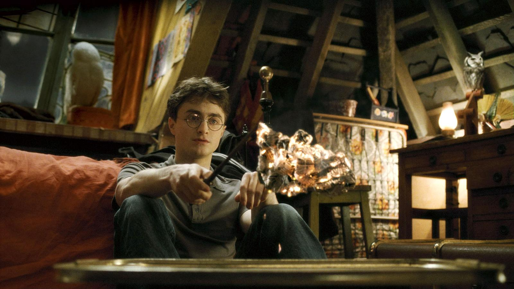

Harry Potter je fiktivní postava a hlavní hrdina série knih britské autorky J.K. Rowlingové. První kniha, Harry Potter a Kámen mudrců, byla vydána v roce 1997 a okamžitě se stala celosvětovým fenoménem. Série o mladém čaroději, který objeví, že je součástí magického světa, se stala jedním z největších literárních úspěchů všech dob. V příběhu sledujeme Harryho, jak navštěvuje školu čar a kouzel v Bradavicích, kde se setkává s přáteli Ronem Weasleym a Hermionou Grangerovou, čelí záhadným nebezpečím a postupně se dozvídá o temných tajemstvích, která se týkají jeho minulosti.